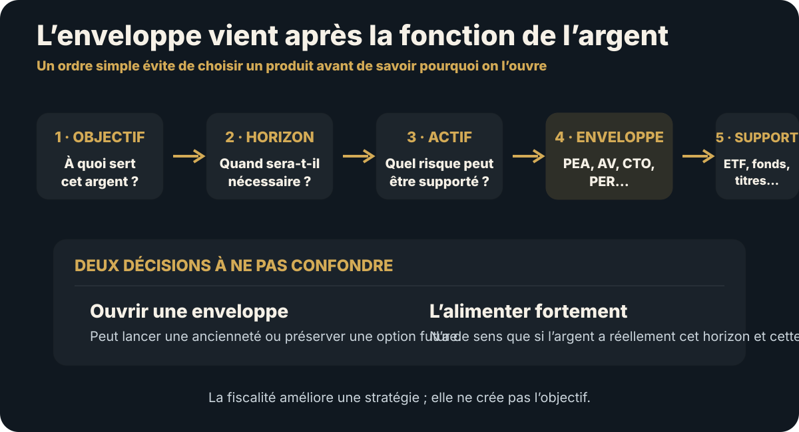

→ Voir à quel stade ces enveloppes deviennent utiles dans la feuille de route complète
En bref
- PEA : très efficace pour les titres éligibles à long terme ; après cinq ans, les gains retirés sont exonérés d’impôt sur le revenu mais restent soumis aux prélèvements sociaux applicables.
- Assurance-vie : enveloppe polyvalente dont la fiscalité de retrait dépend notamment de l’ancienneté du contrat ; l’abattement annuel sur les gains après huit ans reste un repère important.
- CTO : univers d’investissement très large et liquidité simple, avec fiscalité de droit commun sur revenus et plus-values.
- PER : outil retraite et fiscalité différée ; l’argent est en principe destiné au long terme et la déduction des versements dépend du plafond et de la situation fiscale.
- En 2026, le PFU de droit commun sur de nombreux revenus et plus-values mobiliers est de 31,4 % : 12,8 % d’impôt sur le revenu + 18,6 % de prélèvements sociaux. L’assurance-vie conserve toutefois un régime de prélèvements sociaux spécifique dans les cas prévus.
- Une enveloppe peut être ouverte tôt pour lancer son ancienneté, mais seulement si les frais et la complexité restent faibles et si une fonction future est plausible.
1. L’ordre de décision évite 80 % des erreurs
| Étape | Question | Exemple |
|---|---|---|
| Objectif | À quoi servira cet argent ? | Retraite, apport, croissance, transmission. |
| Horizon | Quand peut-il être nécessaire ? | 2 ans, 8 ans, 20 ans. |
| Actif | Quel risque peut-il prendre ? | Monétaire, obligations, actions. |
| Enveloppe | Quel contenant améliore fiscalité/liquidité ? | PEA, AV, CTO, PER. |
| Support | Quel produit concret au meilleur coût ? | ETF, fonds, titres, fonds euros. |
Commencer par « je veux un PER parce que je paie trop d’impôt » inverse l’ordre : vous choisissez d’abord une contrainte de sortie, puis cherchez quoi y mettre.

2. Tableau de comparaison 2026
| Enveloppe | Univers | Liquidité | Horloge utile | Atout dominant | Risque dominant |
|---|---|---|---|---|---|
| PEA | Titres et fonds éligibles | Retraits possibles mais régime très différent avant/après 5 ans | 5 ans depuis le premier versement | Fiscalité long terme sur gains | Univers restreint + erreur de retrait trop tôt. |
| Assurance-vie | Fonds euros + unités de compte selon contrat | Rachats possibles | 8 ans pour un avantage fiscal de retrait important | Souplesse, supports, transmission | Frais et qualité du contrat. |
| CTO | Très large | Forte | Aucune maturité fiscale comparable | Liberté d’investissement | Fiscalité courante. |
| PER individuel | Supports selon contrat | Épargne en principe retraite, cas de déblocage prévus par la loi | Horizon retraite | Déduction potentielle à l’entrée | Rigidité + fiscalité de sortie. |
3. PEA : la date du premier versement a une valeur
La date d’ouverture fiscale du PEA correspond à la date du premier versement. Avant cinq ans, un retrait entraîne en principe la clôture et les gains sont soumis au régime fiscal applicable, avec exceptions prévues. Après cinq ans, les retraits partiels ne ferment plus le plan, de nouveaux versements restent possibles et les gains retirés sont exonérés d’impôt sur le revenu ; ils restent soumis aux prélèvements sociaux.
Impots.gouv.fr indique qu’en 2026, pour un retrait avant cinq ans, le PFU applicable aux gains du PEA est de 31,4 % dans le régime général courant ; après cinq ans, l’impôt sur le revenu est exonéré et les prélèvements sociaux applicables restent dus.
impots.gouv.fr — retraits du PEA, mise à jour 17/07/2026 · Bercy — fonctionnement du PEA.
4. Ouvrir tôt ne signifie pas investir agressivement tôt
Il peut être rationnel d’ouvrir une enveloppe avec un montant faible pour lancer son ancienneté tout en gardant l’essentiel du capital ailleurs tant que l’horizon n’est pas certain. Cette stratégie a une valeur uniquement si :
- les frais fixes sont faibles ;
- vous comprenez la règle de retrait ;
- l’enveloppe a une fonction probable ;
- vous ne multipliez pas dix contrats « au cas où ».
Valeur d’option
Ouvrir le contenant peut être réversible et peu coûteux ; y immobiliser massivement le capital est une décision distincte.
5. Le PEA peut être transféré sans perdre son histoire fiscale
Le transfert intégral d’un PEA vers un autre établissement ne constitue pas un retrait. Le gestionnaire d’origine transmet notamment la date d’ouverture et les informations fiscales au nouveau gestionnaire ; les avantages fiscaux sont conservés.
Avant de clôturer un mauvais PEA pour en rouvrir un autre, comparez donc transfert, frais de transfert, indisponibilité temporaire et ancienneté préservée.
6. Assurance-vie : l’ancienneté du contrat compte, mais les frais peuvent la détruire
Lors d’un rachat, seuls les gains compris dans la somme retirée sont imposables. Pour les primes versées depuis le 27 septembre 2017, après huit ans, l’abattement annuel sur les gains est de 4 600 € pour une personne seule et 9 200 € pour un couple marié ou pacsé soumis à imposition commune, pour l’ensemble des contrats du contribuable.
Pour les produits correspondant aux primes n’excédant pas 150 000 € dans le champ prévu, le taux d’impôt sur le revenu après huit ans est de 7,5 % ; au-delà, une partie relève du taux de 12,8 %. L’assurance-vie conserve en 2026, pour les contrats ordinaires concernés, des prélèvements sociaux à 17,2 %, contrairement à la hausse générale à 18,6 % applicable à de nombreux autres revenus du patrimoine.
Bercy — fiscalité de l’assurance-vie · impots.gouv.fr — assurance-vie et prélèvements sociaux 2026.
Une vieille assurance-vie très chargée en frais n’est donc pas automatiquement excellente parce qu’elle a dépassé huit ans. L’ancienneté est un actif, pas une permission de surpayer le contrat.
7. Assurance-vie : pas de portabilité externe comparable au PEA
Le service de mobilité bancaire de Bercy rappelle qu’un contrat d’assurance-vie n’est pas transférable vers une autre banque/assureur comme un PEA. Fermer un ancien contrat pour en ouvrir un nouveau peut donc faire perdre son ancienneté fiscale.
Bercy — comptes et produits transférables.
Avant de fermer : comparez frais du contrat actuel, supports réellement nécessaires, valeur de l’ancienneté et possibilité de conserver l’ancien contrat faiblement alimenté tout en ouvrant un meilleur contrat pour les nouveaux flux.
8. CTO : la flexibilité est une fonction patrimoniale
Le CTO permet d’accéder à un univers beaucoup plus large et n’impose pas une horloge de retrait comparable au PEA ou au PER. En 2026, les plus-values mobilières de droit commun sont soumises par défaut au PFU de 31,4 %, composé de 12,8 % d’impôt sur le revenu et 18,6 % de prélèvements sociaux, sauf option globale pour le barème progressif lorsque les règles le permettent.
impots.gouv.fr — plus-values mobilières, mise à jour 17/07/2026.
Le CTO peut rester supérieur lorsque le PEA ne donne pas accès à l’exposition recherchée, lorsqu’une stratégie exige davantage de flexibilité ou lorsque clôturer/transférer une autre enveloppe coûterait plus que la fiscalité économisée.
9. PER : comparez l’impôt économisé aujourd’hui à l’impôt et à la rigidité futurs
Le PER individuel est un produit de long terme destiné à la retraite, avec des cas légaux de déblocage anticipé. Les versements volontaires peuvent être déduits du revenu imposable dans la limite du plafond personnel applicable.
Depuis le 1er janvier 2026, les versements effectués après 70 ans ne sont plus déductibles. Pour les versements 2026, les plafonds non utilisés peuvent désormais être reportés sur cinq années antérieures selon les règles prévues, avec dispositions transitoires pour les plafonds 2024 et 2025.
Bercy — PER individuel, mise à jour 01/06/2026.
Le vrai arbitrage fiscal
Économie d’impôt à l’entrée + rendement net futur − fiscalité de sortie − coût de l’illiquidité.
Une TMI élevée aujourd’hui peut rendre la déduction intéressante, mais pas si cet argent finance un projet proche ou si vous aurez besoin de flexibilité avant la retraite.
10. Le PER est portable — et cela change la réponse à un mauvais contrat
Le PER individuel peut être transféré vers un autre PER. Service-Public indique que le transfert est gratuit après au moins cinq ans de détention ; avant cinq ans, les frais peuvent être facturés dans la limite de 1 % de l’épargne accumulée.
Service-Public — transfert du PER individuel.
Avant de racheter ou abandonner une enveloppe retraite mal tarifée, testez donc la portabilité.
11. Quelle enveloppe pour quelle fonction ?
| Fonction | Enveloppe à tester en priorité | Question éliminatoire |
|---|---|---|
| Actions éligibles long terme | PEA | Ai-je besoin de cet argent avant 5 ans ? |
| Allocation multisupport / transmission | Assurance-vie | Le contrat donne-t-il les bons supports à un coût acceptable ? |
| Univers mondial très large / titres non éligibles | CTO | L’avantage d’accès compense-t-il la fiscalité ? |
| Retraite + déduction fiscale | PER | La TMI et l’horizon justifient-ils l’illiquidité ? |
| Projet à 2–3 ans | Aucune enveloppe risquée par défaut | Pourquoi exposer un projet daté à un drawdown ? |
12. Les effets de second ordre de l’optimisation fiscale
Voir le tableau détaillé
| Optimisation | Gain | Risque transféré |
|---|---|---|
| Mettre davantage sur PER | Impôt à l’entrée | Liquidité avant retraite. |
| Tout concentrer dans PEA | Fiscalité actions long terme | Univers d’investissement plus restreint. |
| Conserver une vieille assurance-vie | Ancienneté fiscale | Frais ou supports médiocres. |
| Utiliser seulement CTO | Flexibilité maximale | Fiscalité annuelle/de cession plus forte. |
| Multiplier les contrats | Options supplémentaires | Complexité, suivi, frais et oubli. |
13. Ouvrir tôt, alimenter tard : quand c’est rationnel
Voir le tableau détaillé
| Situation | Action possible |
|---|---|
| PEA probablement utile mais horizon encore incertain | Petit premier versement pour lancer les 5 ans, sans y déplacer l’épargne de sécurité. |
| Assurance-vie susceptible d’être utile à long terme | Ouvrir un contrat peu coûteux pour démarrer l’ancienneté, si les frais fixes sont nuls/faibles. |
| PER fiscalement séduisant mais projet immobilier proche | Attendre ou limiter les versements plutôt que sacrifier la liquidité. |
| CTO nécessaire pour une exposition spécifique | L’utiliser pour ce besoin, sans en faire automatiquement l’enveloppe de tout le patrimoine. |
La règle n’est pas « ouvrez tout le plus tôt possible ». C’est : une petite action réversible peut préserver une option fiscale future sans engager aujourd’hui tout le capital.
14. Quand ne rien transférer ni fermer
Si une enveloppe est correcte, peu coûteuse, contient des actifs adaptés et ne crée pas de blocage, la déplacer pour gagner quelques points de frais théoriques peut coûter du temps, de la fiscalité, de l’indisponibilité temporaire ou une ancienneté impossible à recréer.
Avant toute fermeture, comparez :
- gain annuel attendu ;
- coût de transfert ou de sortie ;
- ancienneté préservée ou perdue ;
- temps d’indisponibilité ;
- supports qui devront être vendus ;
- avantage concret du nouveau contrat.
15. Conditions de renversement
Tableau principal de cette section
| Choix actuel | Information nouvelle | Révision |
|---|---|---|
| Prioriser PEA | Projet proche exige du cash | Réduire les nouveaux versements risqués. |
| Conserver assurance-vie ancienne | Frais/supports deviennent nettement non compétitifs | Conserver faiblement ou arbitrer les nouveaux flux vers un meilleur contrat. |
| Verser fortement sur PER | TMI baisse ou besoin de liquidité augmente | Réexaminer la déduction. |
| CTO par défaut | Actifs éligibles au PEA avec même exposition | Comparer fiscalité et contraintes. |
| Fermer un PEA coûteux | Transfert intégral possible | Préférer le transfert pour conserver l’ancienneté. |
| Multiplier les enveloppes | Deux contrats remplissent la même fonction | Simplifier les nouveaux flux. |
16. Checklist avant ouverture, transfert ou versement important
- Quel objectif exact cette enveloppe remplit-elle ?
- Quel horizon réel a l’argent ?
- Quel actif dois-je y détenir ?
- Quel coût total — frais de contrat + supports + transactions ?
- Quelle fiscalité 2026 s’applique dans mon scénario de sortie ?
- Quelle ancienneté existe déjà ?
- Le produit est-il transférable sans perdre cette ancienneté ?
- Quelle part de liquidité ou d’univers d’investissement est sacrifiée ?
- Existe-t-il déjà une enveloppe qui remplit la même fonction ?
- Quelle information me ferait changer de choix ?
La règle Contre-Évidence
L’optimisation fiscale vient après l’allocation. Utilisez l’enveloppe qui améliore le bon actif sans détruire la liquidité ou l’option future dont vous avez besoin. Et avant de fermer un vieux contenant, vérifiez toujours si son ancienneté peut être conservée par transfert — ou si elle serait définitivement perdue.
Sources officielles 2026
- impots.gouv.fr — fiscalité du PEA, mise à jour 17/07/2026
- Bercy — PEA et transfert
- Bercy — assurance-vie
- impots.gouv.fr — prélèvements sociaux 2026
- impots.gouv.fr — plus-values mobilières 2026
- Bercy — PER, règles 2026
- Service-Public — transfert du PER
- Bercy — transférabilité des produits
La fiscalité dépend de la date des versements, du contrat, de la situation et parfois de règles historiques. Vérifiez à nouveau avant un retrait, un transfert ou un versement significatif.